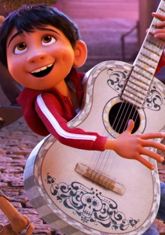
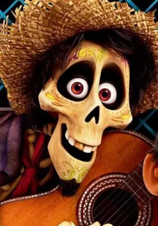
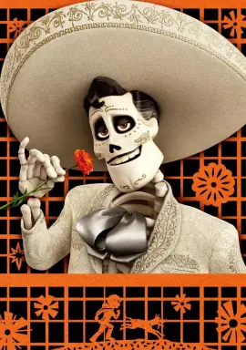
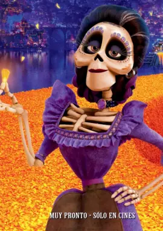

|  | 米格尔·里韦拉斯 演员-- 配音安东尼·冈萨雷兹 12岁的墨西哥小男孩米格，住在一个热闹、嘈杂的墨西哥村庄，自小就有音乐梦。然而他出生在鞋匠家族“里韦拉”，这是整个镇子里唯一讨厌音乐的家庭。在秘密追寻音乐梦时，米格不小心进入了死亡之地，在这里遇见了他家人们的灵魂 |
|  | 埃克托 演员-- 配音盖尔·加西亚·贝纳尔 埃克托是亡灵之地的落魄流浪汉，他想借米格的帮助去往活人的世界。他许诺帮助米格找到歌神德拉库斯，作为回报，米格则答应将埃克托的照片送回他家人的灵坛。当埃克托在人世间被彻底遗忘之时，他将会化作金色的粉末，面临真正的死亡。 |
|  | 德拉科鲁兹 演员-- 配音本杰明·布拉特 生前是墨西哥的传奇音乐家，米格的偶像。这位迷人而有个性的音乐家在意外离世前受到了全世界乐迷的尊崇，而在死者的世界中甚至更受爱戴。米格认为他很可能就是当初那个为追寻音乐梦想而抛家弃子的高祖父。 |
|  | 梅尔达 演员-- 配音阿兰纳·乌巴奇 梅尔达是米格的高祖母，里韦拉家族的女族长。好强，独立，勇敢。在音乐家丈夫抛家弃子消失之后发誓让家人不再碰音乐，而且靠着学习做鞋手艺将米格的太奶奶可可抚养长大，并且让她们家族成了当地著名的鞋匠之家。 |
可可 演员-- 配音安娜·奥菲丽亚·莫吉亚 可可是米格的太奶奶，神智不清的老人，是米格关系最为亲近的重要家人。自从自己的父亲离家之后就由母亲伊梅尔达独自抚养长大，但是她从未忘记自己的父亲，一直惦记着他。“可可”是过去与未来，亡灵界与人间，回忆与现实之间最重要的连接点。 |
|
爱莲娜 演员-- 配音蕾妮·维克多 可可的女儿、米格的奶奶。她是整个里韦拉家族的最高权威人，家族人把音乐等同于遗弃。她无比热爱自己的家人，不惜一切去保护他们。 当被激怒时，她会挥舞起她的拖鞋。一旦涉及与音乐有关的家族禁令，奶奶就变身成传统的坚定捍卫者。 |